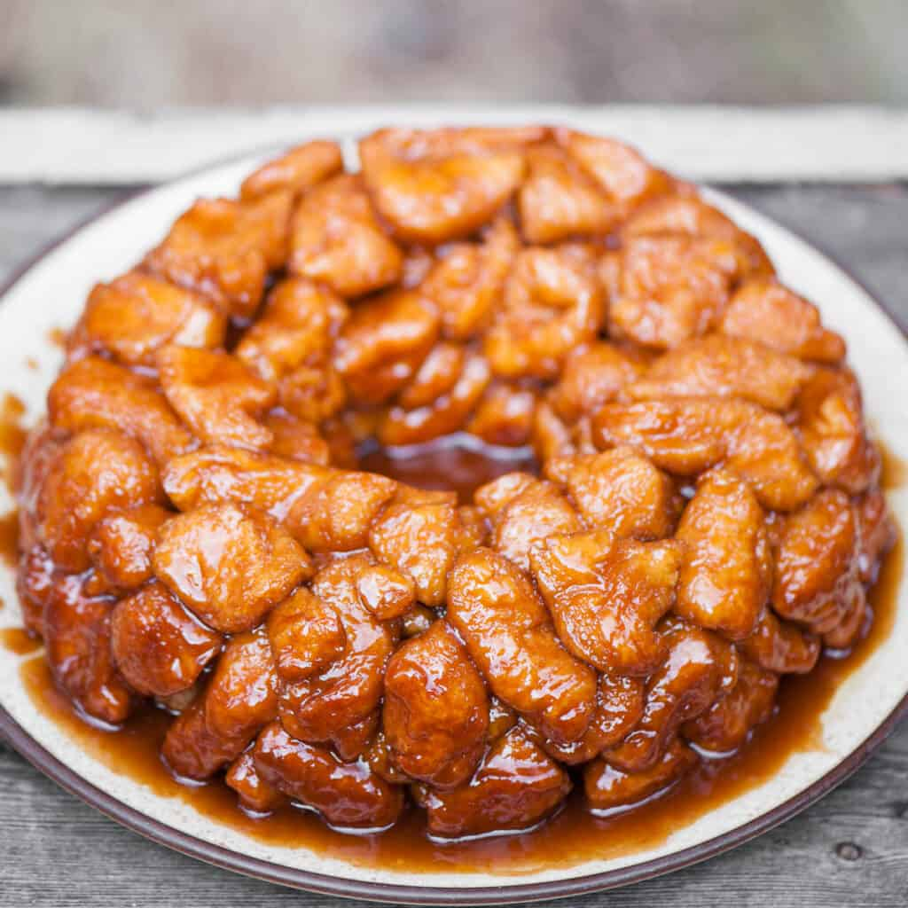

Brandon's Monkey Bread

Description:
A delicious treat for anybody with a real sweet tooth. I found this recipe one day while sitting with my family trying to figure out what we wanted to have for breakfast during the weekend. This is a super easy pull apart bread thats sweet and gooey, perfect for sharing.
Notes:
- Letting the dough sit in the bag or bowel after coating in sugar and spices can improve the flavor and coating of each piece
- As Uncle roger says regarding spices "cook the right way not the white way"
Ingredients:
- 24 ounces refrigerated biscuit dough
- 1 cup granulated sugar
- 2 teaspoons cinnamon
- 1 cup Butter (browned)
- 1/2 cup brown sugar
- Pinch of cloves
- Two pinches of cardamon
Steps:
- Prepare the pan: Heavily grease Bundt or fluted tube pan with butter or non-stick spray. Preheat oven to 350F
- Prepare the dough:Separate biscuits and cut each one into four equal bite-sized pieces. Combine granulated sugar and cinnamon in a bowl or plastic bag. Roll each piece of dough in the sugar-cinnamon mixture and shake around to coat.
- Gently arrange the cinnamon-sugar biscuit pieces into the prepared pan.
- Heat syrupIn a small saucepan, combine brown sugar and butter. Add ½ cup of the remaining sugar-cinnamon mixture (discard remaining or use for another recipe). Gently heat to melt butter and bring mixture just to a boil and then immediately remove from heat. Stir until sugars have fully dissolved. Do not overcook the syrup; you simply want to help the sugar dissolve. Carefully drizzle the warm mixture over the rolled dough balls in the pan.
- BakeArrange pan in the center of the preheated oven and bake for about 30 minutes. Time may vary; see note below.
- InvertAllow pan to rest for about 5 minutes, then cover with a large plate and invert.
- Enjoy!